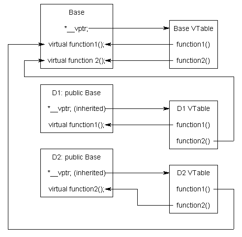

25.6 — 虚函数表
考虑以下程序：
#include <iostream>
#include <string_view>
class Base
{
public:
std::string_view getName() const { return "Base"; } // 非虚
virtual std::string_view getNameVirtual() const { return "Base"; } // 虚
};
class Derived: public Base
{
public:
std::string_view getName() const { return "Derived"; }
virtual std::string_view getNameVirtual() const override { return "Derived"; }
};
int main()
{
Derived derived {};
Base& base { derived };
std::cout << "base has static type " << base.getName() << '\n';
std::cout << "base has dynamic type " << base.getNameVirtual() << '\n';
return 0;
}
首先，让我们看一下对 base.getName()的调用。由于这是一个非虚函数，编译器可以使用 base (Base的实际类型在编译时确定这应该解析为 Base::getName()。
尽管看起来几乎相同，但对 base.getNameVirtual() 的调用必须以不同的方式解析。由于这是一个虚函数调用，编译器必须使用 base 的动态类型来解析调用，而 base 的动态类型在运行时才能知道。因此，只有在运行时才能确定这个特定的 base.getNameVirtual() 解析为 Derived::getNameVirtual()，而不是 Base::getNameVirtual()。
那么虚函数实际上是如何工作的呢？
虚表
C++标准没有规定虚函数应该如何实现（这个细节留给实现决定）。
然而，C++实现通常使用一种称为虚函数表的后期绑定形式来实现虚函数。
浮点类型的 虚函数表 是一个用于以动态/后期绑定方式解析函数调用的查找表。虚函数表有时有其他名称，如“vtable”、“虚函数表”、“虚方法表”或“调度表”。在C++中，虚函数解析有时被称为 动态调度。
术语
这里有一个更简单的思考方式：
早期绑定/静态调度 = 直接函数调用重载解析
后期绑定 = 间接函数调用解析
动态调度 = 虚函数覆盖解析
由于了解虚函数表的工作原理对于使用虚函数并非必需，本节可作为可选阅读内容。
虚函数表实际上非常简单，尽管用语言描述有点复杂。首先，每个使用虚函数（或从使用虚函数的类派生）的类都有一个对应的虚函数表。这个表只是编译器在编译时设置的一个静态数组。虚函数表包含每个虚函数的一个条目，这些虚函数可以被该类的对象调用。表中的每个条目只是一个函数指针，指向该类可访问的最派生函数。
其次，编译器还添加了一个隐藏指针成员，它是基类的一个成员，我们称之为 *__vptr。 *__vptr 在创建类对象时自动设置，使其指向该类的虚函数表。与 this 指针不同，后者实际上是编译器用来解析自引用的函数参数， *__vptr 是一个真正的指针成员。因此，它使每个类对象的大小增加了一个指针的大小。这也意味着 *__vptr 被派生类继承，这一点很重要。
到现在为止，你可能对这些东西如何组合在一起感到困惑，所以让我们看一个简单的例子：
class Base
{
public:
virtual void function1() {};
virtual void function2() {};
};
class D1: public Base
{
public:
void function1() override {};
};
class D2: public Base
{
public:
void function2() override {};
};
因为这里有3个类，编译器将设置3个虚函数表：一个用于Base，一个用于D1，一个用于D2。
编译器还会向使用虚函数的最基类添加一个隐藏指针成员。尽管编译器自动执行此操作，但我们将在下一个示例中将其放入，以显示添加的位置：
class Base
{
public:
VirtualTable* __vptr;
virtual void function1() {};
virtual void function2() {};
};
class D1: public Base
{
public:
void function1() override {};
};
class D2: public Base
{
public:
void function2() override {};
};
当创建类对象时， *__vptr 被设置为指向该类的虚函数表。例如，当创建Base类型的对象时， *__vptr 被设置为指向Base的虚函数表。当构造D1或D2类型的对象时， *__vptr 分别被设置为指向D1或D2的虚函数表。
现在，让我们讨论这些虚函数表是如何填充的。因为这里只有两个虚函数，每个虚函数表将有两个条目（一个用于function1()，一个用于function2()）。记住，当填充这些虚函数表时，每个条目都填充为该类类型的对象可以调用的最派生函数。
Base对象的虚函数表很简单。Base类型的对象只能访问Base的成员。Base无法访问D1或D2的函数。因此，function1的条目指向Base::function1()，function2的条目指向Base::function2()。
D1的虚函数表稍微复杂一些。D1类型的对象可以访问D1和Base的成员。然而，D1覆盖了function1()，使得D1::function1()比Base::function1()更派生。因此，function1的条目指向D1::function1()。D1没有覆盖function2()，所以function2的条目将指向Base::function2()。
D2的虚函数表与D1类似，只是function1的条目指向Base::function1()，而function2的条目指向D2::function2()。
以下是图形化的表示：

虽然这个图看起来有点疯狂，但实际上非常简单：每个类中的 *__vptr 指向该类的虚函数表。虚函数表中的条目指向该类对象允许调用的最派生版本的函数。
所以考虑当我们创建一个D1类型的对象时会发生什么：
int main()
{
D1 d1 {};
}
因为d1是一个D1对象，d1的*__vptr被设置为指向D1虚函数表。
现在，让我们将基指针指向 D1：
int main()
{
D1 d1 {};
Base* dPtr = &d1;
return 0;
}
注意，因为 dPtr 是基指针，它只指向 d1 的 Base 部分。然而，也要注意 *__vptr 位于类的 Base 部分，所以 dPtr 可以访问这个指针。最后，注意 dPtr->__vptr 指向 D1 的虚表！因此，即使 dPtr 的类型是 Base*，它仍然可以访问 D1 的虚表（通过 __vptr)。
那么当我们尝试调用 dPtr->function1() 时会发生什么？
int main()
{
D1 d1 {};
Base* dPtr = &d1;
dPtr->function1();
return 0;
}
首先，程序识别出 function1() 是一个虚函数。其次，程序使用 dPtr->__vptr 来获取 D1 的虚表。第三，它查找在 D1 的虚表中应该调用哪个版本的 function1()。这已被设置为 D1::function1()。因此， dPtr->function1() 解析为 D1::function1()！
现在，你可能会说：“但如果 dPtr 实际上指向一个 Base 对象而不是 D1 对象呢？它还会调用 D1::function1() 吗？”答案是否定的。
int main()
{
Base b {};
Base* bPtr = &b;
bPtr->function1();
return 0;
}
在这种情况下，当 b 被创建时，b.__vptr 指向 Base 的虚表，而不是 D1 的虚表。由于 bPtr 指向 b， bPtr->__vptr 也指向 Base 的虚表。Base 的虚表中 function1() 的条目指向 Base::function1()。因此， bPtr->function1() 解析为 Base::function1()，这是 Base 对象应该能够调用的 function1() 的最派生版本。
通过使用这些表，编译器和程序能够确保函数调用解析到适当的虚函数，即使你只使用基类的指针或引用！
调用虚函数比调用非虚函数慢，原因有几个：首先，我们必须使用 *__vptr 来获取适当的虚表。其次，我们必须索引虚表以找到要调用的正确函数。只有这样我们才能调用该函数。因此，我们需要执行 3 个操作来找到要调用的函数，而普通的间接函数调用需要 2 个操作，直接函数调用只需要 1 个操作。然而，在现代计算机上，这个额外的时间通常相当微不足道。
另外提醒一下，任何使用虚函数的类都有一个 *__vptr，因此该类的每个对象都会增加一个指针的大小。虚函数很强大，但它们确实有性能代价。